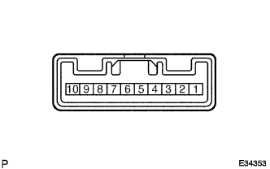
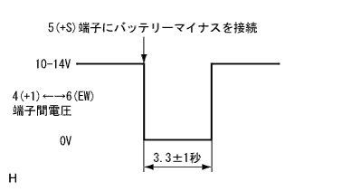
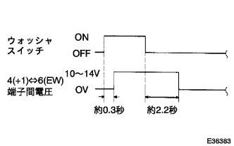

ウインドシールド ワイパ スイッチASSY 単体点検 |
| 1. ウインドシールド ワイパ スイッチASSY点検 |
導通点検
|  |
SST(トヨタエレクトリカルテスター)を使用して、コネクター各端子間の導通を点検する。
| 切り替え | 端子番号(端子名) | 導通 |
|---|---|---|
| MIST | 3(+B)←→4(+1) | 導通あり |
| OFF | 4(+1)←→5(+S) | 導通あり |
| INT | 4(+1)←→5(+S) | 導通あり |
| LO | 3(+B)←→4(+1) | 導通あり |
| HI | 3(+B)←→2(+2) | 導通あり |
| 切り替え | 端子番号(端子名) | 導通 |
|---|---|---|
| OFF | - | いずれも導通なし |
| ON | 7(W)←→6(EW) | 導通あり |
| 切り替え | 端子番号(端子名) | 導通 |
|---|---|---|
| WASH | 8(WR)←→6(EW) | 導通あり |
| OFF | - | いずれも導通なし |
| ON | 9(+1R)←→6(EW) | 導通あり |
| ON+WASH | 8(WR)←→9(+1R)←→6(EW) | 導通あり |
間欠作動点検(フロントワイパ)
SST(トヨタエレクトリカルテスター)を使用して、コネクターの4(+1)端子にSSTのプラス端子、6(EW)端子にSSTのマイナス端子を接続する。
コネクターの3(+B)端子にバッテリーのプラス、6(EW)端子と5(+S)端子にバッテリーのマイナスを接続する。
ワイパスイッチをINTにする。
コネクターの5(+S)端子を5秒間バッテリーのプラスに接続する。
|  |
コネクターの5(+S)端子にバッテリーのマイナスを接続して、間欠ワイパリレーを作動させたときの4(+1)端子と6(EW)端子間の電圧を点検する。
作動点検(フロントウォッシャ)
フロントワイパスイッチをOFFにする。
コネクターの3(+B)端子にバッテリーのプラス、5(+S)端子と6(EW)端子にバッテリーのマイナスを接続する。
|  |
SST(トヨタエレクトリカルテスター)を使用して、コネクターの4(+1)端子にSSTのプラス端子、6(EW)端子にSSTのマイナス端子を接続し、ウォッシャスイッチをON、OFFしたときの4(+1)端子と6(EW)端子間の電圧を点検する。